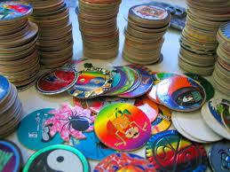

Beanie Babies

I mean who could forget this craze. The today show was doing bits on these treasures. The coveted Ty tag of authenticity. I felt so bad for these little animals. They would get bought with these cute little names by crazy gray haired ladies and then would never be played with so they could be mint in the box like Toy Story 2.
Pogs
There were a hot ticket item for about 5 minutes. I remember going to pog themed birthday parties where you would trade for wierd holographic ones and sometimes score a really good jammer. Who had time to play the game with so much collecting to do.
Polly Pocket

If beanie babies and pog were too intense you could always play the long game with Polly Pocket. You can stock up on birthday and Christmas in hopes you wouldn't lose the teeny tiny POlly this time so soon and swear to your mom you play with it all the time and definetly need another one.